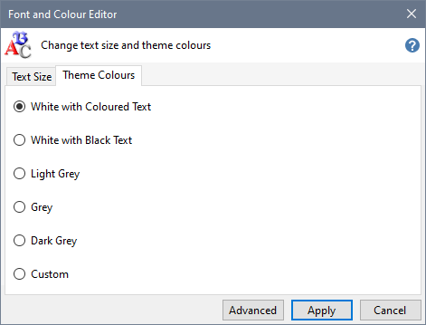

Click the Theme Colours tab, select the Theme you want to use and press Apply.

The Custom Theme Colour option is only shown if you have made changes to one of the standard Themes using the Advanced Font and Colour Editor.
Click Advanced to change which colours are used for specific elements of the Installer Tool's user interface.
When you press Apply, the Installer Tool restarts to apply your changed colour preferences.
Use the "Apply Theme colours to Notes and other Rich Text Format (RTF) files" on the Preferences page in Advanced Settings to specify whether you want to apply your Theme colours to Notes and other RTF files in all Profiles.
This preference will be disabled when a custom Standard Background colour is applied.
Note:
Ensure that the White with Coloured Text Theme has been applied before enabling or disabling this preference. After setting this preference, you can restore your preferred Theme.
This approach prevents any colour migration issues and produces the most reliable results.
If you are using one of the dark colour Themes and open a Rich Text Format file in WordPad, the white text on WordPad's default white page colour will only be visible when selected.
Change Theme Colours